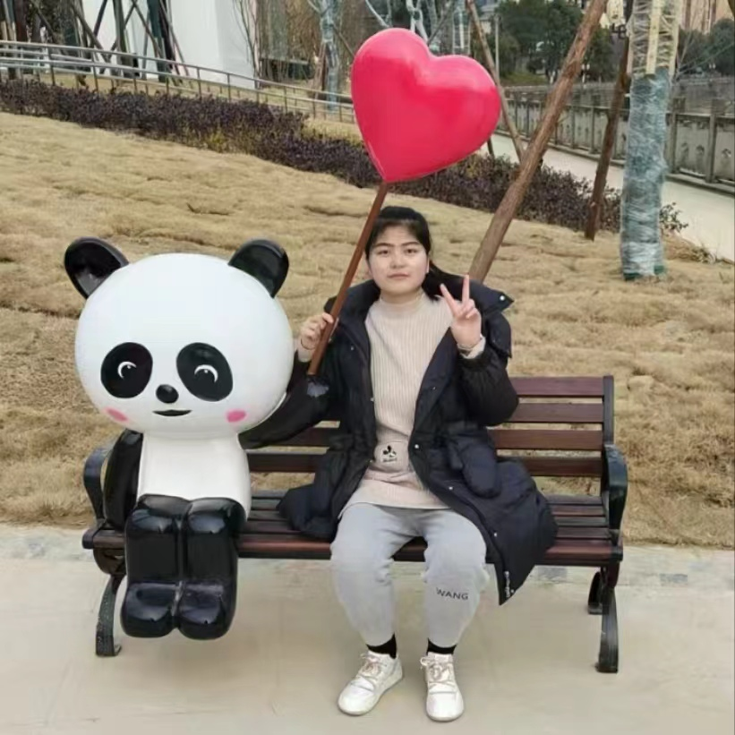

Yawen Luo | 罗亚文Research AssistantDepartment of Information Engineering The Chinese University of Hong Kong Email: yawenluo@cuhk.edu.hk
|
 |
Biography
I am a Research Assistant in the Department of Information Engineering at The Chinese University of Hong Kong, under the supervision of Prof. Tianfan Xue. My research interests lie in the fields of computer vision and deep learning, with a current focus on controllable video generation.
Previously, I obtained my bachelor's degree from Huazhong University of Science and Technology.
Publications
- Video Bokeh Rendering: Make Casual Videography Cinematic Yawen Luo, Min Shi, Liao Shen, Yachuan Huang, Zixuan Ye, Juewen Peng, Zhiguo Cao† ACM International Conference on Multimedia 2024, (ACM MM 2024 Oral)
Honors
- Outstanding Undergraduate Graduates, HUST, 2024
- Scholarship, 2021 & 2022 & 2023
- Merit Undergraduate, HUST, 2021 & 2022 & 2023
- Outstanding Freshman Scholarship, HUST, 2021
- Outstanding Undergraduates, 2022
| © Yawen Luo | Last update: September 2024 |